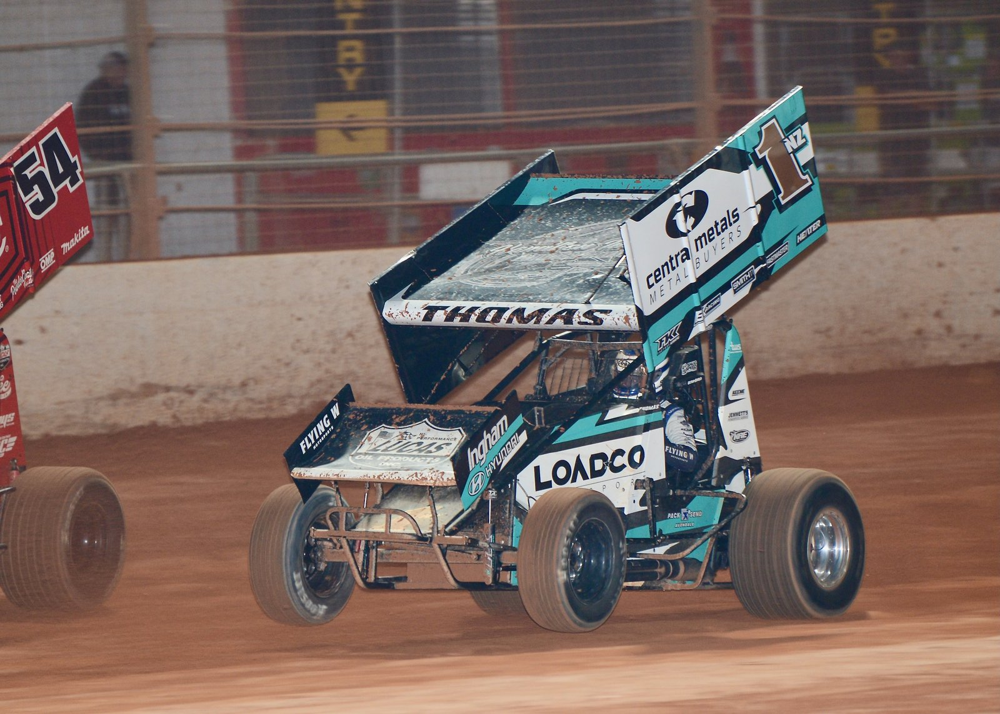

Defending NZ Champion Daniel Thomas Makes Season Debut at Baypark Saturday
The Hamilton driver is scheduled to race Saturday, Nov. 28, at Baypark Speedway in Mt Maunganui, his first start of the 2026-27 season after an engine problem in pre-season practice, according to a Baypark Speedway release.

Defending New Zealand Sprint Car champion Daniel Thomas of Hamilton is scheduled to make his 2026-27 season debut Saturday, Nov. 28, at Baypark Speedway at Mercury Baypark Stadium in Mt Maunganui, according to a Baypark Speedway press release. The program is the third sprint car night of the season and continues the build-up to the 2027 New Zealand title, which will be held at Baypark in early March. Thomas will be on track for the first time since he suffered an engine problem in pre-season practice, the track said.
The night is headlined by the South Pacific Super Saloon Car Championship, the longest-running signature event at Baypark, dating to the 1980s and the original Baypark venue, the release said.
F2 Midgets will make their season debut with a 13-car field that includes James Earl, Dion Kendall, 2025-26 season finale feature winner Roydon White, and teenagers Dylan Heard and Campbell Hayes, recent graduates from the Youth Mini Stock class, according to the release. Stock Cars and Youth Mini Stocks complete the program, with racing from 6:30 p.m. Saturday local time (11:30 p.m. CT Friday, Nov. 27).